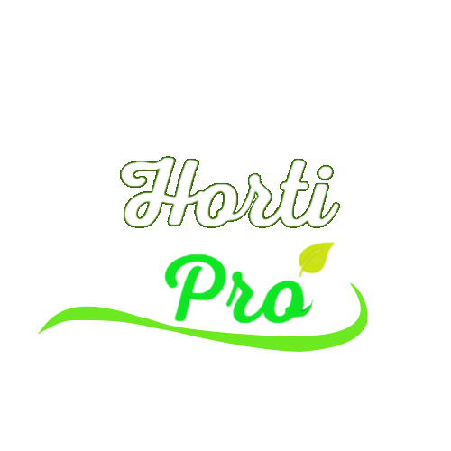

Perfil
Carrinho
Produtos
Sou cliente
Sou produtor
Cadastre Produtos
Sobre Nós
Nosso objetivo é incentivar a agricultura orgânica, agroecológica e a produção artesanal brasileira, com respeito ao meio-ambiente e aos animais. Cortamos os intermediários entre o campo e a cidade, remunerando de maneira justa mais de 900 famílias produtoras. As frutas, legumes, verduras e temperos orgânicos que chegam até você são certificados pelo IBD, a maior certificadora de orgânicos da América Latina. Destinamos parte do nosso faturamento e as doações dos clientes ao Fundo do Pequeno Produtor, gerido coletivamente pelos próprios agricultores.
A Horti Pro é feita por pessoas apaixonadas e inquietas. Cada um por aqui acredita na potência e na sabedoria contidas na agricultura familiar e na produção artesanal e, claro, adora comida boa e tudo o que isso implica. Sabe o mais legal? A Horti Pro tem certificação de empresa B, movimento que nasceu nos Estados Unidos e reconhece empresas cujo objetivo é unir o lucro à responsabilidade social e ambiental.